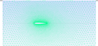
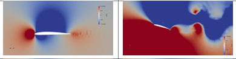
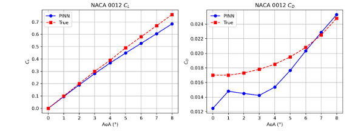

Abstract
The unsteady Navier-Stokes equations are a powerful tool in the field of computational fluid dynamics (CFD) for solving and analyzing complex flow fields. In this report, we present two-dimensional unsteady simulations of flow over airfoils with varying geometries, and we compute the resulting aerodynamic forces. Vortex shedding patterns play a critical role in determining the lift force generated, making them a key focus in the study of flying objects. The simulations were performed by discretizing the governing flow equations using the Finite Element Method (FEM), a widely used and robust numerical approach in the computational science community.
While numerical simulations provide detailed insights, they often come with a high computational cost. As an alternative, we explore the use of neural networks, which can be trained on available datasets to predict flow fields and aerodynamic forces. This approach offers a significant reduction in computational expense and holds great promise as an efficient tool for predicting flow patterns across a wide range of geometries.
Introduction
The performance of airfoils is critical for the aerodynamic efficiency of various aircraft and aerospace vehicles. This study conducts a comparative analysis of three fundamental airfoil shapes — symmetrical, asymmetrical (cambered), and semi-symmetrical — focusing on their aerodynamic behavior across different flow regimes. The central research question is: How do airfoil shapes at different angles of attack influence the pressure, velocity, lift and drag?
The primary contribution of this study is the performance analysis of the three airfoil categories within a computational fluid dynamics (CFD) framework and using PINN (Physics Integrated Neural Network) to predict the CL vs α and CD vs α curves. Findings will focus on lift and drag coefficients, pressure gradients, and velocity gradients to provide clearer guidance on airfoil selection across different flight regimes.
Numerical Method
The model problem considered in this report consists of multiple airfoils positioned at different angles of attack, placed within a uniform flow field inside a rectangular domain. This setup employs a reverse methodology, where instead of simulating a moving airfoil, the airfoil is kept stationary and the flow is modeled as moving around it. This approach simplifies the simulation process while capturing the essential flow physics.
The incompressible unsteady Navier-Stokes equations were employed as the governing equations. The numerical formulation involved transforming the strong form of these equations into a weighted residual form, which was then discretized using the Petrov-Galerkin method to obtain the weak form. For getting more stabilized results and avoiding spurious modes, the Galerkin Least Square Stabilization scheme (Q1P1) was implemented, since we had a Quadrilateral mesh in the surrounding region of the airfoil and a Triangular mesh in the far field.
Simulation Setup
The geometry profile and meshing was done using GMSH. The following parameters were used for the finer and coarse meshes: h1 = 0.01 (fine mesh), h2 = 2 (coarse mesh). The mesh quality was assessed in Paraview, with the following factors: Aspect ratio, Scaled Jacobian, Maximum angle.
The following input parameters were used for the simulation: ρ = 1 Kg/m³; Time = 4 sec; Δt = 0.005 sec; μ = 0.00002 Pa·s. Inlet boundary conditions: u = 1 m/s, v = 0.

Mesh around NACA airfoil — fine mesh near surface, coarse in far field
Physics-Informed Neural Network (PINN)
The PINN in this project emulates a CFD solver by mapping airfoil geometry and incidence angle directly to the aerodynamic coefficients CL and CD. The network serves as a surrogate model in the broader CFD study, removing the need to run a high-fidelity Navier-Stokes solver for every candidate geometry.
- Inputs: eight class-shape-transformation (CST) coefficients (c1,...,c8) describing the airfoil surface, plus the angle of attack α
- Outputs: predicted lift and drag coefficients CL and CD
- Architecture: 3 hidden layers, 64 neurons each, tanh activations
- Dataset: 288 unique geometry–AoA samples; 80/20 train–validation split
- The three evaluation foils (NACA 0012, 2408, 2415) were excluded from training to test generalisation
Results
From the pressure plots, we can observe that the symmetric NACA 0012 airfoil doesn't show a pressure difference at 0° but at 16° angle of attack, shows a pressure difference which indicates lift generation. Comparatively, both NACA 2408 and NACA 2415, which are unsymmetric and semi-symmetric, have pressure differences at both angles of attack indicating lift generation.
Velocity plots of all the NACA airfoils show flow separation at 16° angle of attack indicating there will be stalling.

Pressure plots at 0° and 16° angles of attack for NACA 0012, 2408, and 2415
Figure below compares the physics-informed neural network (blue) with reference aero-data (red) for the three withheld airfoils. The network captures the lift curves accurately across the entire 0–8° sweep. In contrast, the drag prediction shows a clear anomaly: for NACA 2415 the curve bends downward beyond 5–6°. This error stems from a training set that was both sparse and noisy in CD and, critically, contained no samples above 8°.

PINN performance on NACA 0012, 2408, 2415 — CL vs AoA (left), CD vs AoA (right)
Conclusion
The Navier-Stokes equations are a cornerstone of fluid dynamics, providing a powerful framework for investigating a wide range of flow phenomena, from smooth laminar flows in channels to complex, high-speed turbulent regimes. In this study, we analyzed the flow over multiple airfoils in two-dimensional conditions at low velocities. Our results demonstrate that the vortex shedding patterns from the airfoils vary significantly with the angle of attack, which directly influences the lift and drag forces acting on the airfoils.
While conventional code-based CFD simulations have long been the standard for modeling such flows, a promising new approach is emerging: the use of neural networks to predict aerodynamic forces. This data-driven technique has the potential to bypass the need for computationally expensive simulations for each individual geometry, enabling rapid predictions across a broad range of shapes and conditions.